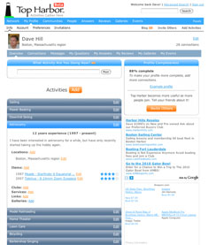
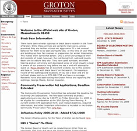

-

Top Harbor
TopHarbor.com is a large, complex social networking site for folks who are serious about having fun and making better connections with people who share their interests. Think of it as LinkedIn for the rest of your life. People can create profiles of each of their activities, listing the items they use, the clubs they belong to, services and stores they use, and the locations where they do their activities.
Using this information, TopHarbor.com builds communities based on each of these entries, so folks can see who enjoys their activities the same way they do. The site includes Q&A, reviews of items and services, geo-location based on postal code or geographical feature, photo galleries, and events.
-

Town of Groton
This is the official web site for the Town of Groton, Massachusetts and is a major communication channel between town government and the citizens of Groton. The site provides detailed information about each board, committee, and office in town as well as a listing of all registered businesses.
The most popular feature is the Town Crier, which allows any citizen to post news and events (subject to review) on the site, making the content both timely and very dynamic.
This site was immediately recognized as a top municipal web site by the Massachusetts Municipal Association (MMA) when it was launched and CEO Dave Hill presented "Managing Your Web Presence" at the annual MMA convention. The web site also received an eGovernment award presented at the Massachusetts State House.
OUR LOCATION

Our business is located in beautiful Groton, Massachusetts. Founded in 1655, Groton is one of the oldest towns in the United States. Located 35 miles northwest of Boston, nearby rivers as well as glacier-formed eskers and drumlins provide great opportunities for biking, hiking, and canoeing.
Copyright © 2013 Digital Brook Technologies, LLC
All rights reserved.